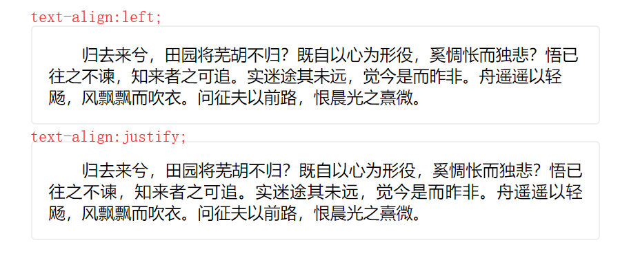
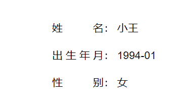

说起text-align，大家一定都不觉得陌生，我们常用关键字left、right、center实现行内元素相对父元素左、右、居中对齐，当然我们也使用justify来实现文本两端对齐。

如上图，两端对齐相对于左对齐，视觉上显得整齐有序。但justify对最后一行无效，通常这样的排版对整段文字是极好的，我们并不希望当最后一行只有两个字时也两端对齐，毕竟这是不便于阅读的，那么当我们只有一行文本，但要实现单行文本两端对齐怎么解决（如下图的表单项效果）？

根据justify对最后一行无效，我们可以新增一行，使该行文本不是最后一行，实现如下：
//html
<div class="item">
<span class="label" >{{item.label}}</span>：
<span class="value">{{item.value}}</span>
</div>
//scss
.item {
height: 32px;
line-height: 32px;
margin-bottom: 8px;
.label {
display: inline-block;
height: 100%;
width: 100px;
text-align: justify;
vertical-align: top;
&::after {
display: inline-block;
width: 100%;
content: '';
height: 0;
}
}
.value {
padding-right: 10px;
}
}but以上写法可以说是比较麻烦的，重点来啦，最近新了解到的一个属性text-align-last，该属性定义的是一段文本中最后一行在被强制换行之前的对齐规则。
//scss
.item {
margin-bottom: 8px;
.label {
display: inline-block;
height: 100%;
min-width: 100px;
text-align: justify;
text-align-last: justify;
}
.value {
padding-right: 10px;
}
}相比第一种实现，第二种实现方式就简单了不少，不过该属性有兼容性问题，大家可以根据情况决定实现方式，想了解更多关于text-align-last的说明，参见https://developer.mozilla.org/zh-CN/docs/Web/CSS/text-align-last